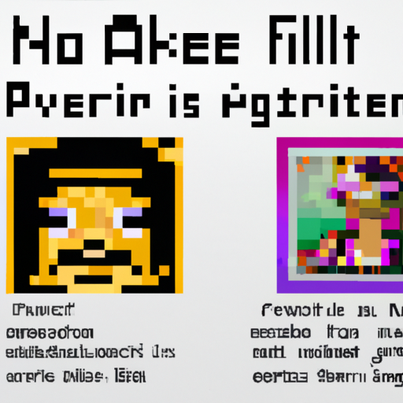

Why AI will never replace the artist
Recently, AI has been making strides in the world of art. Artists have been using AI to create unique and interesting pieces, and some argue that AI could eventually replace traditional artists.
However, I believe that AI will never replace the artist. AI lacks the creativity and imagination that comes with the creative process. Machines are able to create beautiful pieces, but they can never replace the passion and emotion that an artist brings to their work.
It is also important to consider the human element when it comes to art. An artist’s work is a reflection of themselves, and no machine can replicate the emotion and personal connection that comes with creating art. AI is limited to what it can do, while an artist has the potential to create something entirely new and different.
Finally, AI is still in its infancy. While it is capable of creating stunning works of art, it is not yet capable of replicating the complexity of a human’s creative process. Machines are still far from being able to create something truly original and unique.
In conclusion, I believe that AI will never replace the artist. Machines can create beautiful pieces, but they will never be able to replicate the passion and emotion that comes with the creative process. AI is still in its infancy and is far from being able to create something entirely new and unique.